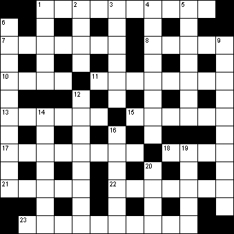

|
|
Daily Quick Crossword
5 February

|
Across 1 Belligerence, hostility (10)7 Make unclear (7) 8 Hesitate (5) 10 South African of Dutch ancestry (4) 11 Bring back (8) 13 Symbol (6) 15 Meriting respect or esteem (6) 17 Breed of terrier (8) 18 Curved structure (4) 21 Hairdresser's establishment (5) 22 Pouch worn with kilt (7) 23 Brains (4,6) |
Down 1 Gangway (5)2 Adhesive (4) 3 Football or cricket team (6) 4 Higher-ranking (8) 5 Wealthy, luxuriant (7) 6 Orchestral instrument (6-4) 9 All (10) 12 Inclination (8) 14 Housebreaker (7) 16 Northernmost American state (6) 19 Less common (5) 20 The left-hand side of a ship (4) |
|
Copyright © 2018 Simply Daily Puzzles
|